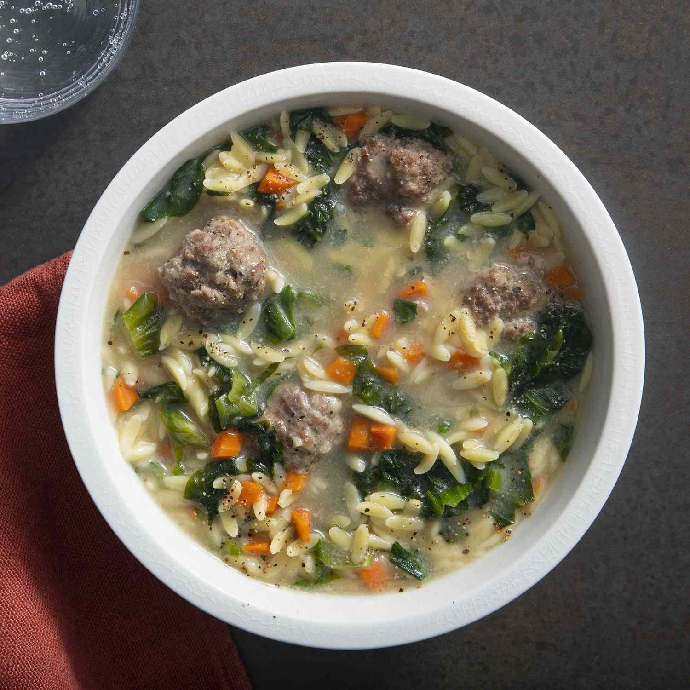
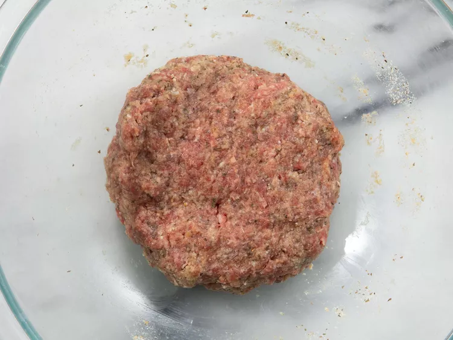
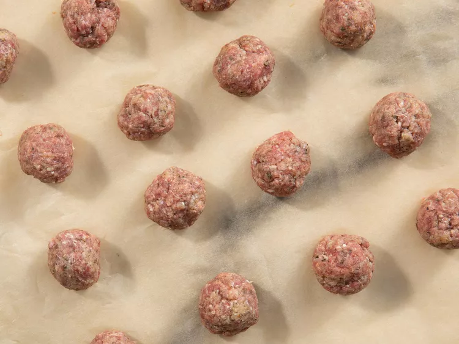

Warm up with a hearty bowl of Italian wedding soup. This top-rated soup recipe is the perfect bowl of comfort that everyone will love. Want to know the best part? This Italian wedding soup only requires a few ingredients and comes together in less than an hour.
Italian wedding soup is a hearty Italian soup consisting of noodles, vegetables, meatballs, and broth. It was originally a "peasant dish," meaning it's made from inexpensive ingredients that anyone could find.
Even though it's called "wedding soup," this soup has nothing to do with weddings. The name comes from the Italian phrase "minestra maritata," which actually means married soup. But it's not the marriage we think of it's actually referring to the marriage of the ingredients and the flavor it produces.
Most Italian wedding soups contain these ingredients:
This particular recipe calls for orzo pasta, which is what we like to use. But you can really use any small pasta you have on hand, like ditalini or acini de pepe.
Italian wedding soup really does have it all, so don't feel pressured to serve it with anything! However, we like serving this soup with a warm dinner roll.
Store completely cooled Italian wedding soup in an airtight container in the fridge for up to four days. You may need to add more broth or water when you're ready to reheat the soup, as the pasta tends to soak it up. Reheat on the stove or in the microwave until warmed through.
Italian wedding soup freezes well. Ladle the completely cooled soup into individually portioned zip-top freezer bags. Freeze flat for up to three months. Thaw in the fridge overnight and reheat on the stove until warmed through.
"I love this soup. The only changes I made was to use mild Italian sausage for the meatballs, which I made in advance, and I used baby spinach leaves instead of escarole," says slowcooker. "I added the spinach during the last minute of cooking. This is a great weeknight soup."
"I made this for the first time on Easter. My husband and I had had it before but my guests were delighted. It was better than any I had tasted. It has become a family favorite, and I like that it is so simple to make," raves another Allrecipes community member.
"This soup was excellent!" according to Marlena C. "Based upon other reviews, I doubled the meat so I'd have a lot of meatballs, and added extra broth. I have already made this recipe twice, and plan on making it frequently in the future!"
Combine ground beef, egg, bread crumbs, Parmesan cheese, basil, and onion powder in a bowl.

Shape beef mixture into 3/4-inch balls and place on a parchment-lined tray.

Heat broth in a large pot over medium-high heat until boiling. Stir in escarole, orzo, carrot, and meatballs and return to boil. Reduce heat to medium and cook at slow boil, stirring frequently to prevent sticking, until pasta is tender yet firm to the bite, about 10 minutes.
Serve hot and enjoy!
Home